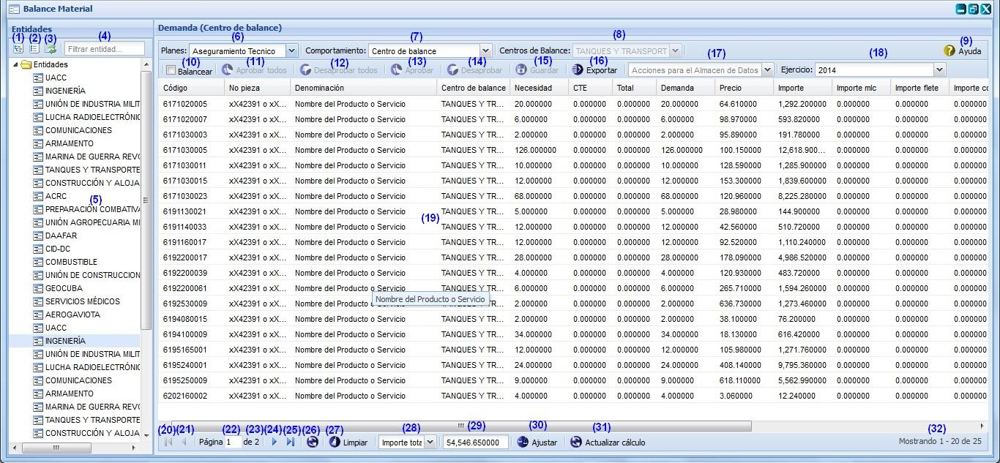
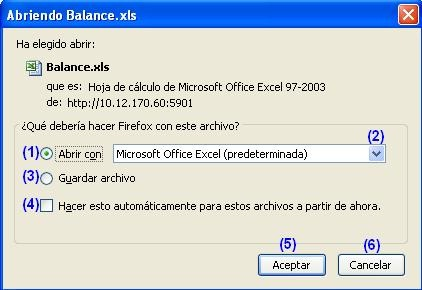

--Balance material--
El balance permite ajustar una necesidad para satisfacer la demanda. Para llegar a esta funcionalidad se puede acceder a través de la opción Inicio\Planificación material\Balance material\Balance material. Una vez seleccionada la funcionalidad, aparecerá en pantalla la interfaz de la misma, donde el usuario autenticado podrá realizar las acciones que desee, en correspondencia con el acceso que tenga definido, ver figura 1.
Para listar las demandas pertenecientes a una entidad es necesario seleccionar una entidad en el panel izquierdo Entidades. Seguidamente se selecciona un Plan, un Comportamiento y un Centro de balance en la parte superior del panel derecho como se muestra en las opciones (6), (7) y (8) de la figura 1. Una vez seleccionadas estas opciones el sistema le listará las demandas asociadas a los datos seleccionados anteriormente como se muestra en la opción (19).

Figura 1. Interfaz y acciones de la funcionalidad Balance material.
Las diferentes opciones que conforman la figura anterior permiten:
- Expandir todas las entidades.
- Colapsar todas las entidades.
- Refrescar todas las entidades.
- Buscar entidades por un criterio de búsqueda. Esta acción permite buscar una entidad en específico a partir de un criterio introducido. Para realizar esta funcionalidad se procede a desglosar el árbol de entidades que aparece en el panel izquierdo Entidades y seleccionar la entidad padre, una vez seleccionada la misma se introduce(n) la(s) primera(s) letra(s) de la entidad que desea buscar en el campo de filtro que aparece en la opción (4). Luego de introducido el criterio de búsqueda se muestra la entidad que cumple con los datos especificados. En caso de que no exista una entidad que coincida con el criterio de búsqueda especificado no se obtendrá ninguna respuesta.
- Lista de entidades.
- Listar los planes. Si al desglosar el campo Planes se selecciona un plan en específico, el sistema mostrará los indicadores del plan seleccionado.
- Listar comportamiento. Si al desglosar el campo Comportamiento se selecciona un comportamiento en específico, el sistema mostrará las entidades del comportamiento seleccionado.
- Listar centro de balance. Si al desglosar el campo Centro de balance se selecciona un centro de balance en específico, el sistema mostrará las entidades del centro de balance seleccionado.
- Mostrar la ayuda de la funcionalidad. Se puede acceder a esta funcionalidad presionando las teclas (Alt + H).
- Balancear. Esta funcionalidad permite balancear los indicadores consolidados. Para ejecutar esta funcionalidad debe desglosar el campo Comportamiento y seleccionar el comportamiento Centro de balance (opción 7 de la figura 1), una vez seleccionado el mismo, se procede a seleccionar una entidad de las que se muestran en el árbol del panel izquierdo entidades. Luego de seleccionada la entidad se procede a desglosar el campo planes y seleccionar un plan. Automáticamente se le mostrará un listado de los indicadores consolidados del plan seleccionado, sin incluir los indicadores del centro de balance en cuestión. Se selecciona la opción Balancear y se le listará la demanda consolidada de todos los indicadores controlados por ese centro de balance que han realizado todas las entidades, incluyendo el centro de balance en cuestión. La opción Balancear solo se activará cuando se seleccione el comportamiento Centro de balance. Una vez seleccionada esta opción se desaparecerá de la interfaz el panel izquierdo entidades.
- Aprobar todos. Esta opción permite aprobar toda la demanda. Para ejecutar esta acción se debe seleccionar la opción Aprobar todos que aparece en el panel derecho Demanda. Una vez seleccionada la misma, el sistema le mostrará un mensaje de confirmación, que se puede Aceptar o Cancelar según sea el caso, de presionar la opción aceptar el sistema le mostrará un mensaje de información sobre el éxito de la operación realizada, se acepta el mensaje de información y se aprueba toda la demanda de los indicadores consolidados del plan seleccionado. Si se opta por la opción Cancelar, el sistema cancela la acción y no permite aprobar toda la demanda. Se puede realizar esta operación seleccionando la combinación de teclas (Ctrl + Alt + Q).
- Desaprobar todos. Esta opción permite desaprobar toda la demanda. Para ejecutar esta acción se debe seleccionar la opción Desaprobar todos que aparece en el panel derecho Demanda. Una vez seleccionada la misma, el sistema le mostrará un mensaje de confirmación, que se puede Aceptar o Cancelar según sea el caso, de presionar la opción Aceptar el sistema le mostrará un mensaje de información sobre el éxito de la operación realizada, se acepta el mensaje de información y se desaprueba toda la demanda de los indicadores consolidados del plan seleccionado. Si se opta por la opción Cancelar, el sistema cancela la acción y no permite desaprobar toda la demanda. Se puede realizar esta operación seleccionando la combinación de teclas (Ctrl + Alt + W).
- Aprobar. Esta opción permite aprobar la demanda de él(los) indicador(es) deseado(s). Para efectuar esta acción se debe(n) seleccionar el(los) indicador(es) que desea aprobar y seleccionar la opción Aprobar que aparece en el panel derecho Demanda. Una vez seleccionado(s) el(los) mismo(s), el sistema le mostrará un mensaje de confirmación, se acepta el mensaje y le mostrará un mensaje de información sobre el éxito de la operación realizada, se acepta el mensaje de información y se aprueba(n) el(los) indicador(es) seleccionado(s). Si se opta por la opción Cancelar, el sistema cancela la acción y no permite aprobar el(los) indicador(es). Se puede realizar esta operación seleccionando la combinación de teclas (Alt + Q).
- Desaprobar. Esta opción permite desaprobar la demanda de él(los) indicador(es) deseado(s). Para efectuar esta acción se debe(n) seleccionar el(los) indicador(es) que desea desaprobar y seleccionar la opción Aprobar que aparece en el panel derecho Demanda. Una vez seleccionado(s) el(los) mismo(s), el sistema le mostrará un mensaje de confirmación, se acepta el mensaje y le mostrará un mensaje de información sobre el éxito de la operación realizada, se acepta el mensaje de información y se desaprueba(n) el(los) indicador(es) seleccionado(s). Si se opta por la opción Cancelar, el sistema cancela la acción y no permite desaprobar el(los) indicador(es) seleccionado(s). Se puede realizar esta operación seleccionando la combinación de teclas (Alt + W).
- Guarda la información del panel Demanda. Se puede acceder a esta funcionalidad presionando las teclas (Alt + G). Esta acción solo se activará una vez modificado el campo CTE de al menos un indicador.
- Exporta las demandas, ver Exportar indicadores. Se puede acceder a esta funcionalidad presionando las teclas (Alt + E).
- Seleccionar la acción que se desea realizar sobre el almacén de datos, ya sea de actualización o de cierre.
- Seleccionar el año del ejercicio con que se desea trabajar. Esta funcionalidad permite cambiar de ejercicio de planificación.
- Listado de las demandas.
- Ir a la primera página, mostrando las primeras existencias.
- Ir a la página anterior.
- Muestra el número de la página donde se encuentra, se puede introducir el número.
- Muestra el número máximo de páginas.
- Ir a la siguiente página.
- Ir a la última página.
- Actualizar el listado de existencias.
- Limpiar filtro(s). Esta acción limpiará todos los criterios de búsqueda, deshabilitando los filtros realizados. Se puede realizar esta operación seleccionando la combinación de teclas (Alt + L).
- Seleccionar el importe que desea visualizar de la demanda.
- Mostrar el importe según el concepto seleccionado en la opción (28).
- Ajustar demanda. Esta funcionalidad permite ajustar la demanda de los indicadores consolidados, a partir del plan seleccionado. Para efectuar esta acción, se procede a presionar la opción Ajustar que aparece en la parte inferior de la interfaz (paginado), ver Figura 1. El sistema le mostrará automáticamente un mensaje de confirmación, se acepta el mensaje de confirmación y se muestra un mensaje de información sobre el éxito de la operación realizada, se acepta el mensaje de información y se actualizan los valores de los campos CTE (Cobertura total estimada), Total, Demanda e Importe. El sistema distribuye el Total siguiendo la prioridad que tienen los planes, la demanda se actualiza (Demanda= Necesidad-CTE). Si se opta por la opción Cancelar del mensaje de confirmación, el sistema cancela la acción y no permite ajustar la demanda. Se puede realizar esta operación seleccionando la combinación de teclas (Alt + G).
- Actualizar cálculo de CTE.
- Mostrar la cantidad de resultados encontrados.
Nota: es importante tener en cuenta que las funcionalidades de aprobación y Balancear solo la podrán efectuar los centro de balance.
Listar demanda
- Si la entidad por la que se accedió al sistema es:
- Un órgano demandante.
- Se selecciona el Comportamiento, opción (7) de la figura 1.
- Si el comportamiento seleccionado es “Centro de balance” se recarga el panel izquierdo Entidades con todas las entidades que demandan indicadores que controla el centro de balance mostrado en el combo Centro de balance, para posteriormente seleccionar así una entidad se la lista.
- Un órgano rector.
- Se selecciona el Comportamiento, para el cual se desea ver las demandas de indicadores. Opción (7) de la figura 1.
- Si el comportamiento seleccionado es “Centro de balance”, se desaparecen las entidades que aparecen listadas, se activa el combo Centro de balance para seleccionar uno en específico. Selecciona el centro de balance y se recarga el panel izquierdo Entidades con todas las entidades que demandan a la entidad, para posteriormente seleccionar una.
Una vez desglosados dichos campos se procede a seleccionar un plan, opción 6 de la figura 1. Automáticamente se muestra el listado de la demanda con el(los) indicador(es) de la demanda del ejercicio actual. Si desea que se listen los indicadores de un ejercicio diferente a los del ejercicio actual, se procede a desglosar el campo Ejercicio que aparece en el panel derecho Demanda, una vez desglosado el mismo, el sistema le recargará el panel Demanda de forma tal que todas las operaciones a realizar se efectúen sobre el ejercicio seleccionado y no por el actual.
Exportar indicadores
Esta funcionalidad permite exportar los indicadores de una determinada entidad, para exportar los mismos se procederá de igual forma como se explica en el listado de opciones de la figura 2.

Figura 2. Abriendo Cálculo_Cobertura.xls.
Las diferentes opciones que conforman la figura anterior permiten:
- Abrir un documento con los indicadores pertenecientes a la entidad seleccionada.
- Seleccionar formato en que desea guardar o visualizar el documento.
- Guardar archivo en la carpeta Descargas.
- Ejecutar las opciones (1) o (3) sin mostrar la ventana cada vez que se invoque a la funcionalidad.
- Ejecutar la acción según la opción seleccionada.
- Cancelar las acciones y salir de la interfaz sin realizar ninguna operación.
Nota: para ejecutar la funcionalidad se debe desglosar el árbol de entidades y seleccionar una entidad de las que se listan, luego de seleccionada la misma se procede a desglosar el campo Planes que aparece en el panel derecho Demanda y seleccionar un plan de los listados, automáticamente en el panel Demanda se listarán cada uno de los indicadores pertenecientes al plan seleccionado y se activará a su vez la funcionalidad Exportar.
Buscar demanda
Se selecciona la opción de filtrado en la(s) columna(s) deseada(s) mediante un clic encima de la(s) misma(s). Se introducen los criterios de filtrado por los que quierebuscar una demanda:
- Código: se introduce el código.
- No pieza: se introduce el número de pieza.
- Denominación: se introduce la denominación.
- Centro de balance: se selecciona el centro de balance
- Necesidad: se introduce la necesidad.
- CTE: se introduce la cobertura total estimada.
- Total: se introduce el valor total a visualizar.
- Demanda: se introduce la demanda.
- Precio: se introduce el precio.
- Importe: se introduce el importe.
- Importe mlc: se introduce el mlc.
- Importe flete: se introduce el importe flete.
- Importe contingencia: se introduce el importe contingencia.
- Importe mn: se introduce el importe mn.
- Vía de adquisición: se selecciona la vía de adquisición.
- Órgano que satisface: se selecciona el órgano que satisface.
- Aprobado: se selecciona si está aprobado o no.
Una vez realizada la búsqueda por alguno de los criterios anteriormente especificados el sistema le mostrará un listado de él(los) indicador(es) que cumplen con los criterios de búsqueda especificados. En caso que no existan datos, se muestra el mensaje de información, ver figura 3.
Figura 3. Mensaje de información del filtro.